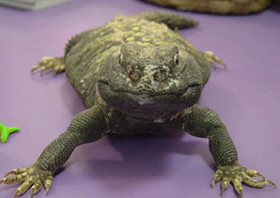
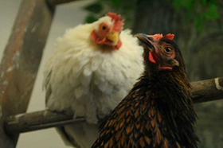

Wild Rumpus
2720 West 43rd Street
Minneapolis, MN 55410
We are located in Linden Hills, which is in SW Minneapolis on the west side of Lake Harriet.
Upton Ave is our closest cross street. The corner of Upton and 43rd is north of 50th, east of France,
west of Penn and 35W, and south of Excelsior Blvd.
Public transportation: The 6E bus stops half a block away from us at the corner of Upton Ave and 43rd
St. Visit metrotransit.org to find schedules, bus routes and directions.
We want your old books, so bring 'em on in!
Here are the basic rules of the trade:
We'll give you (this was the part you were waiting for, right?)...
for regular books:
50 cents store credit, OR 25 cents cash
for spineless (i.e. staple bound) books:
10 cents store credit, OR 5 cents cash
While we welcome you to drop off books at anytime, Wild Rumpus can be crazy on the weekends so we can't
guarantee that we'll get to them immediately. We might have you leave your name and number to contact
you in the near future. If you drop your books off, please note that any books we can't accept will be
disposed of after 3 days.
Best Drop-off Hours:
Mondays: 12pm - 4:30pm
Tuesdays - Fridays: 10:30am - 7:30pm
During its twenty-five-year course, Wild Rumpus has had a sort of conversation with the book The
Salamander Room by Anne Mazer. In 1992, we first used this story as a kind of blueprint for building the
store. And today it continues to teach us about books and young people, and about adults who love them.
Alone, Brian goes into the woods, discovers a salamander and takes it home to his bedroom. Each page of
the story that follows is driven by his off-stage mother's questions. And for each question, Brian has
an answer. His answers both accommodate the new salamander and magically transform the world of his
bedroom. Each illustration shows a step in a process that changes a conventional interior to an
exterior: gradually walls and ceilings disappear, wildlife moves in and then takes Brian and the reader
back out. And at the end, the last pages show Brian sound asleep in his bed in the woods . . . "and next
to me, on the boulder with its head resting on soft moss, the salamander will sleep."

Architecture doesn't have the luxury of page-turning, but instead allows us a front-to-back spatial
progression. Our store's front doors open into a fairly conventional interior with carpet, a comfortable
reading chair and floorlamp. Midway, things begin to change, there's a tree-trimmer sheetrocked in the
ceiling on a ladder, and the ceiling itself at this point starts to crack open to the sky. At the back,
with birds above and rats beneath a garden shed, the store wants you to feel like you're outside.
Besides feeding us a design concept, there are other, deeper layers of flavor in this favorite book.
It's a story about parenting. Brian's mother, instead of screaming, "Where have you been? How many times
have I
told you not to wander off into those woods alone?
And I just cleaned your room and what's that
slimey animal doing in your drawer? Brian!" Not so in this book. This mother asks simple questions, not
in an interrogating, punishing way, but more as little gifts that honor and nourish her son's
intelligence.

Woody Allen once confessed that he'd always felt "at two with nature." A recent radio commentator
lamented that parents no longer allow their children "to play on the edges of civilization." Instead too
many children today are willingly tethered to indoor technology and self-sequestered away from the
natural world. This book is all but literally eliminating the distinctions between indoors and outdoors.
Remember, the salamander is an amphibian--it lives and breathes by moving back and forth between water
and earth. In mythology, the salamander is associated with the fourth element, fire. One explanation is
that the amphibian hibernates in logs which, when brought inside to fuel a winter fire resulted in the
salamander's sudden appearance among the flames.
In the beginning, Brian may bring nature in the form of a salamander inside
to his bedroom, but by the end, the salamander--throughout a silent chorus--has torn off the ceiling,
broken down the walls and thus shows us how transient all of our shelters really are. No matter what we
construct or how hard we try to wrap and protect ourselves, there's really no way to avoid the truth
that we all live together and sleep together in nature's great and only salamander room. -Tom
Contrary to popular belief, our feline friends did not lose their tails to a slamming door, or a grabby
toddler, or even a boating accident. They are naturally tail-less! They are a breed of cat called Manx
which originated on the Isle of Man. The lack of tail or nubby tail is the result of a genetic mutation.
They are also known for having personalities that are more like dogs, thus making them the perfect match
for our wild little bookstore!
It's true, we have a "secret" discount of sorts for our frequent shoppers. If you purchase one of our
lovely reusable canvas tote bags, you will receive a 20% discount off of any future purchase, provided
that you bring your bag with you. You can be stylish, green, and save money all at once!